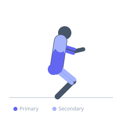
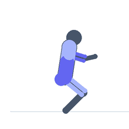

Exercise guide / Tire Flip
Tire Flip
The tire flip involves driving a large tractor or implement tire from the ground to a vertical position and then pushing it over, combining elements of a deadlift, a hip-extension power clean, and an overhead push in a single continuous movement. The initial drive from the floor mirrors a deadlift in posterior chain loading, the mid-section acceleration resembles a clean pull, and the final push-over engages the chest and shoulders. The tire flip is a full-body power and conditioning exercise foundational to strongman training and widely used in athletic strength and conditioning programmes.
Primary muscles
erector spinae
gluteus maximus
biceps brachii long head
triceps long head
Secondary muscles
biceps femoris long head
vastus lateralis
deltoid anterior
pectoralis major sternal
trapezius upper
Stabilizers
transverse abdominis
internal oblique
external oblique
Equipment


Starting position
- Stand facing the flat side of the tire. Squat down and position both hands underneath the tire at the base. The feet are slightly wider than hip-width, toes pointed out. The chest and thighs are pressed against the tire.
Setup
- Choose a tire weight appropriate for training level. Begin with a tire that can be flipped with consistent, controlled technique — typically 100–200 kg for intermediate trainees. Ensure the tire is on a stable, flat surface.
Steps
- Step 1: Drive through the legs explosively, extending the hips and knees to begin driving the tire upward from the floor.
- Step 2: As the tire rises, step one foot forward (into a lunge position) and re-grip higher on the tire surface.
- Step 3: Continue the hip extension drive and begin pushing the tire forward with the arms as it approaches vertical.
- Step 4: Once the tire is at or beyond 90°, deliver a final explosive push with both arms to send it over and onto the flat side.
- Step 5: Move clear of the falling tire, then reposition for the next repetition.
Coaching cues
- Drive the chest into the tire — it should feel like a squat, not a deadlift
- Explode the hips — the arms just guide it, the legs lift it
- Re-grip high before the push-over
Breathing
- Take a full breath and brace before the initial lift. Exhale explosively at the moment of the hip drive. Breathe again before the push-over.
Range of motion
- The tire travels from flat on the ground to fully overturned — a rotation of approximately 180° around the horizontal axis.
Tempo
- Strength: 3–5 flips × 4–6 sets. Rest 2–3 minutes. Conditioning: 10 flips as fast as possible × 3–5 rounds. Rest 2 minutes.
Common mistakes
- Trying to lift the tire like a deadlift with straight legs rather than driving with the chest against the tire and using hip extension explosively
- Re-gripping too low when the tire rises, limiting the ability to push it over
- Pushing the tire over too early before it is upright enough — this requires far more upper body strength and reduces lower body contribution
Safety
- Never allow the tire to fall backward onto you — if the flip fails, step away to the side
- Do not place fingers under a falling tire
- Build to heavy tire flipping with lighter tires first
- Ensure adequate lower back warm-up before tire flipping — it places high load on the erector spinae in a rounded back position
Training
- strength: 3–5 reps
- endurance: 8–12 reps
- strength: 4–6 sets
- endurance: 3–5 sets
- Rest: {'strength': 180, 'endurance': 120}